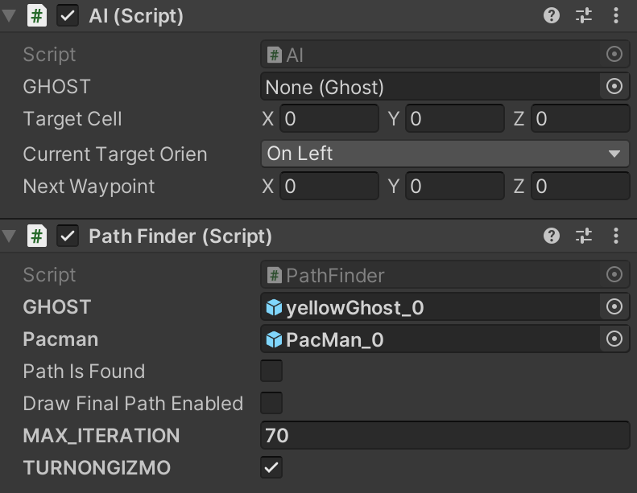

An attempt to make a PAC-MAN clone. The project makes use of UnityEngine
2D TileMap combining with free-asset tile palette from itch.io, provided by
VladPenn.[https://vladpenn.itch.io/pacman]
Source code: Link
More Details: clink here

Experimenting with A* Path Finding algorithm. The Target destination is set to
the player[PAC-MAN] by each ghost. The script then calculates the shortest
path from ghosts to current player position when ghosts are in "Chasing
State". When the final path is found, which stored in a list of waypoint
, each Ghost then passes the list into its position Queue, used to update
current position for every Update circle.
The Path Finder script can also toggle on/off the color-coded visual trail of
the final path when found, which displayed in Unity Editor Mode.

An attempt to make a PAC-MAN clone. The project makes use of UnityEngine